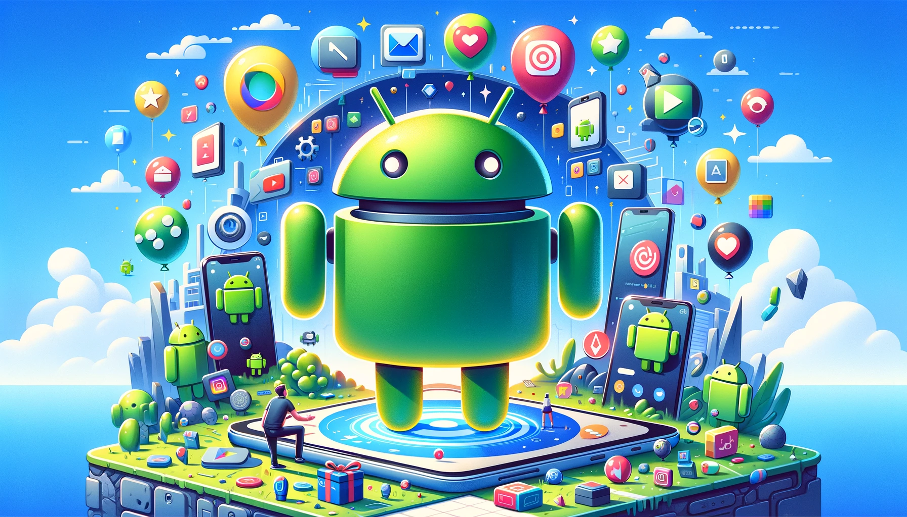
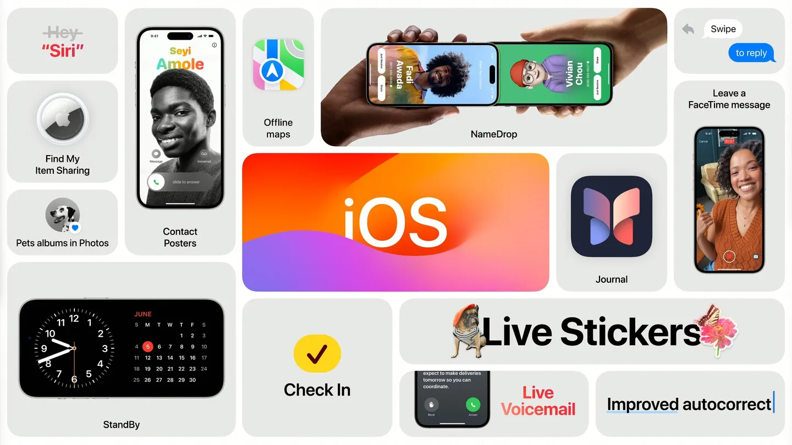

Android é um sistema operacional que foi lançado em 2008, presente em celulares, tablets, TVs e até mesmo carros.
O Android foi criado pela Android Inc., uma empresa fundada por Andy Rubin, Rich Miner, Nick Sears e Chris White, em 2003. Inicialmente, o objetivo era desenvolver um sistema operacional para dispositivos móveis que fosse mais aberto e flexível do que os existentes na época. Em 2005, o Google comprou a Android Inc. e continuou o desenvolvimento do sistema. O Android foi lançado oficialmente em 2008 com o primeiro dispositivo, o HTC Dream (também conhecido como T-Mobile G1). Desde então, o Android se tornou o sistema operacional móvel mais popular do mundo, conhecido por sua flexibilidade e ampla adoção em diversos dispositivos.
O sistema operacional é baseado no kernel do Linux, ou seja, desenvolvedores, designers e também fabricantes de dispositivos podem fazer mudanças e criar funcionalidades diferentes. Ele contempla diferentes tipos de conectividade (GSM, CDMA, Wi-Fi, Bluetooth), assim como vários suportes de mídia (AVI, MKV, FLV, MPEG4 e etc) e formatos de imagem (JPEG, PNG, GIF, BMP, MP3 e etc). O Android também possui várias APIs para dar suporte a serviços e, por ser do Google, contempla todos os serviços oferecidos pela empresa.
O iOS também é um sistema operacional, mas é exclusivo para smartphones da Apple, o iPhone. Também era usado no iPad, mas o tablet da maçã ganhou o próprio sistema, chamado de iPadOS.
Em 2007, desenvolvido sob a liderança de Scott Forstall, o sistema foi projetado para oferecer uma experiência intuitiva e fluida. O iOS trouxe inovações como a interface touchscreen e a App Store, que foi lançada em 2008. Ao longo dos anos, o iOS evoluiu com atualizações regulares, incluindo melhorias em segurança, performance e novas funcionalidades, consolidando-se como um dos sistemas operacionais móveis mais populares e avançados.